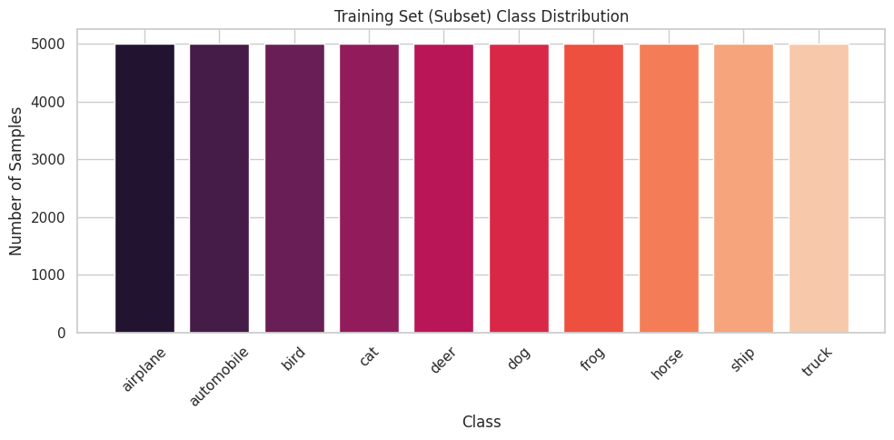
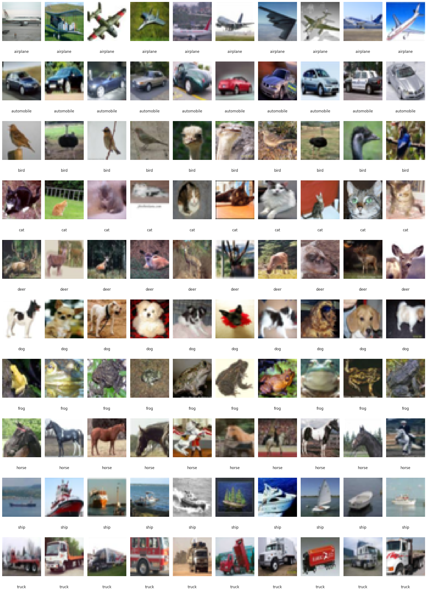

Tập dữ liệu và
thiết lập thực nghiệm
CIFAR-10, phép chia dữ liệu cố định, tiền xử lý và thước đo dùng chung để đối chiếu các bài tập trên cùng điều kiện.
Giới thiệu tập dữ liệu
CIFAR-10 là tập dữ liệu phân loại ảnh đa lớp gồm 60 000 ảnh màu RGB kích thước 32 × 32 pixel. Tập gốc có 50 000 ảnh huấn luyện và 10 000 ảnh kiểm thử. Mười lớp gồm airplane (máy bay), automobile (ô tô), bird (chim), cat (mèo), deer (hươu), dog (chó), frog (ếch), horse (ngựa), ship (tàu thủy) và truck (xe tải).
| Thuộc tính | Giá trị |
|---|---|
| Tổng số ảnh | 60 000 |
| Ảnh huấn luyện gốc | 50 000 |
| Ảnh kiểm thử | 10 000 |
| Kích thước | 32 × 32 pixel |
| Số kênh màu | 3 (RGB) |
| Số lớp | 10 |
Bảng 2.1 · Thông tin tổng quan về CIFAR-10.
Mỗi lớp có 6 000 ảnh: 5 000 ảnh trong tập huấn luyện gốc và 1 000 ảnh trong tập kiểm thử. Quy mô dữ liệu phù hợp với phạm vi bài tập và vẫn đủ phức tạp để so sánh bộ phân loại Softmax, MLP và CNN.
Phân tích và trực quan hóa dữ liệu
Trước huấn luyện, nhóm khảo sát phân bố số mẫu theo lớp và quan sát ảnh đại diện. Cả 10 lớp trong tập huấn luyện gốc đều có 5 000 ảnh, nên không cần xử lý mất cân bằng lớp.


Dù độ phân giải thấp, ảnh có màu sắc, hình dạng và bối cảnh đa dạng. Một số cặp lớp như cat–dog và automobile–truck tương đối giống nhau về thị giác, làm bài toán phân loại khó hơn.
Phân chia tập huấn luyện, kiểm định và kiểm thử
Nhóm chia một lần 50 000 ảnh huấn luyện gốc theo kiểu phân tầng thành 45 000 ảnh huấn luyện và 5 000 ảnh kiểm định. Mỗi lớp đóng góp đúng 500 ảnh kiểm định. Seed cố định là 42; chỉ số ảnh và mã băm SHA-256 được lưu trong common/cifar10_split.json. Các bài E1–E3 dùng cùng phép chia và ghi lại mã băm trong kết quả để kiểm tra khả năng tái lập.
Dữ liệu tải qua Hugging Face (uoft-cs/cifar10) chỉ được chấp nhận khi mã băm ảnh và nhãn trùng với bản TorchVision đã dùng để tạo phép chia. Do thứ tự ảnh của hai bản khác nhau, dữ liệu Hugging Face được sắp lại theo thứ tự TorchVision trước khi áp dụng chỉ số. Tập kiểm thử gốc gồm 10 000 ảnh được giữ nguyên, chỉ đánh giá sau khi huấn luyện; không dùng để chọn mô hình hay siêu tham số.
| Tập dữ liệu | Số mẫu | Mục đích |
|---|---|---|
| Huấn luyện | 45 000 | Huấn luyện mô hình |
| Kiểm định | 5 000 | Theo dõi quá trình huấn luyện |
| Kiểm thử | 10 000 | Đánh giá kết quả cuối cùng |
Bảng 2.2 · Phân chia tập dữ liệu trong thực nghiệm.
Tiền xử lý dữ liệu
Ảnh được chuyển thành tensor PyTorch; giá trị pixel từ [0, 255] được đưa về [0, 1]. Trung bình và độ lệch chuẩn được tính riêng trên 45 000 ảnh huấn luyện cho từng kênh màu, tránh rò rỉ thông tin từ tập kiểm định và kiểm thử.
Với c ∈ {R, G, B}, μ ≈ (0,4918; 0,4825; 0,4468) và σ ≈ (0,2471; 0,2435; 0,2617). Cùng phép chuẩn hóa áp dụng cho cả ba tập.
Tăng cường dữ liệu: chỉ trên tập huấn luyện, ảnh được cắt ngẫu nhiên 32 × 32 sau khi đệm 4 pixel và lật ngang với xác suất 0,5. Các phép biến đổi thực hiện sau chuẩn hóa. Ảnh kiểm định và kiểm thử không được tăng cường. Báo cáo mô tả cấu hình này là dùng chung cho E1–E3 và nêu thêm một lượt E1 không tăng cường để đối chiếu.
Quy trình thực nghiệm chung
- Dữ liệu: cùng phép chia 45 000 / 5 000 / 10 000 và thống kê chuẩn hóa nêu ở trên.
- Seed: mỗi cấu hình được lên kế hoạch huấn luyện với ba seed 0, 1, 2, điều khiển khởi tạo, thứ tự dữ liệu và tăng cường dữ liệu. Báo cáo kết quả bằng trung bình ± độ lệch chuẩn mẫu.
- Thời lượng: 30 epoch cho mỗi mô hình E1–E3 theo quy trình trong báo cáo.
- Kết quả chính: độ chính xác kiểm thử với trọng số ở epoch cuối; không chọn checkpoint hoặc siêu tham số theo tập kiểm thử. E1 còn ghi checkpoint có loss kiểm định thấp nhất để phân tích bổ sung.
- Tái lập: mỗi lần chạy lưu JSON gồm cấu hình, mã băm phép chia, lịch sử huấn luyện, kết quả cuối, thời gian và môi trường. Bảng và hình được sinh từ các tệp này; notebook Colab của từng bài có chế độ nạp kết quả đã lưu hoặc chạy lại.
Siêu tham số riêng như bộ tối ưu, tốc độ học và kích thước batch được nêu trong từng chương. E3 hiện là trang kế hoạch, chưa công bố kết quả thực nghiệm.
Các chỉ số đánh giá
Bốn khía cạnh được dùng để so sánh mô hình: độ chính xác, năng lực và chi phí, độ ổn định giữa các seed, và đặc điểm lỗi phân loại.
2.6.1 · Độ chính xác
Phân bố lớp cân bằng giúp accuracy phù hợp để so sánh hiệu năng tổng thể. Chỉ số kiểm thử tính trên 10 000 ảnh; chỉ số kiểm định dùng để theo dõi.
2.6.2 · Năng lực và chi phí mô hình
Năng lực được xem xét qua số tham số có thể huấn luyện P = Σi=1L |θi| và đặc điểm kiến trúc. Chi phí gồm thời gian huấn luyện trung vị mỗi epoch, bộ nhớ GPU đỉnh, thời gian suy luận và, ở E2, số phép nhân–cộng cho một ảnh. Các phép đo thời gian và bộ nhớ chỉ so sánh trực tiếp khi chạy trên cùng máy.
2.6.3 · Độ ổn định giữa các seed
Ba seed cho mỗi cấu hình được tổng hợp bằng trung bình ± độ lệch chuẩn mẫu, với mẫu số n − 1. Khi n = 3, độ lệch chuẩn chỉ là ước lượng thô; chỉ nên diễn giải những chênh lệch lớn hơn rõ rệt so với mức biến thiên này.
2.6.4 · Phân tích lỗi
Ma trận nhầm lẫn chuẩn hóa theo hàng cho thấy các cặp lớp thường bị nhầm. Một số ảnh dự đoán sai với độ tin cậy cao được hiển thị cùng nhãn thật và nhãn dự đoán để giải thích kiểu lỗi của từng mô hình.